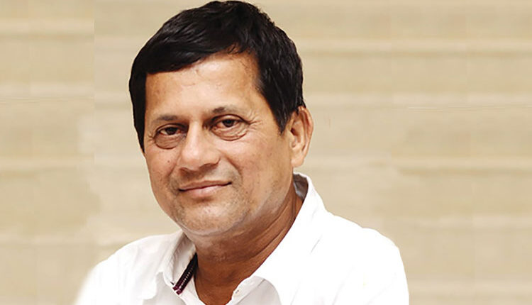

ABOUT KIIT
EVENTS
KIIT Events is a student-driven digital initiative designed to centralize and simplify access to all official college events within KIIT. Built by students, for students, this platform addresses a common challenge — the lack of structured, accessible information about campus events.
From technical workshops and cultural festivals to sports competitions and society-led programs, KIIT Events serves as a unified hub where students can explore detailed event information, schedules, venues, and registration links in one organized space.
About KIIT
Kalinga Institute of Industrial Technology (KIIT), established in 1992-93 by Dr. Achyuta Samanta, has grown from a modest educational initiative into one of India's leading multidisciplinary universities. Located in Bhubaneswar, Odisha, KIIT was granted Deemed-to-be-University status in 2004 and has since earned national and international recognition for excellence in education, research, and innovation.
KIIT offers a wide range of programs across engineering, management, law, medical sciences, biotechnology, liberal arts, and more. With students from across India and over 60 countries, the university fosters a diverse, inclusive, and globally connected academic environment.
Beyond academics, KIIT emphasizes holistic development through sports, cultural engagement, entrepreneurship, and social responsibility. With world-class infrastructure, research facilities, and industry collaborations, KIIT continues to empower students to become innovators, leaders, and changemakers of the future.

Dr. Achyuta
Samanta
About the Founder
Dr. Achyuta Samanta
Dr. Achyuta Samanta is an educationist, social reformer, and the founder of KIIT and KISS (Kalinga Institute of Social Sciences). Born in a small village in Odisha, he faced significant financial hardships in his early life. Despite these challenges, his determination and commitment to education led him to establish KIIT in 1992 with limited resources but an extraordinary vision.
Under his leadership, KIIT has become one of India's premier educational institutions. In addition, he founded KISS, a globally recognized institution dedicated to providing free education, accommodation, and vocational training to thousands of underprivileged tribal children.
Dr. Samanta's work extends beyond education into social development, rural empowerment, and community upliftment. His contributions have earned him numerous national and international honors. His vision remains centered on making quality education accessible, inclusive, and transformative.
Founders of KIIT Events
MD WASIULLAH
FOUNDER - KIIT EVENTS
MD Wasiullah is a Founder of KIIT Events and has been deeply involved in building and shaping the platform. He contributes to system development, feature implementation, and the overall technical vision of the project.